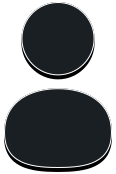
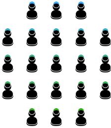
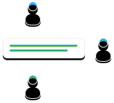
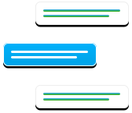
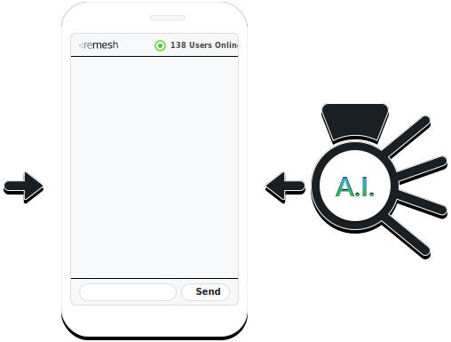

You don't have to choose
"What does not get measured gets missed.” Learn more from your audience with Remesh.
Focus Groups
Surveys
Remesh
 
 

Deep qualitative understanding
No statistical significance
Statistically significant quantitative insights
No deep qualitative understanding